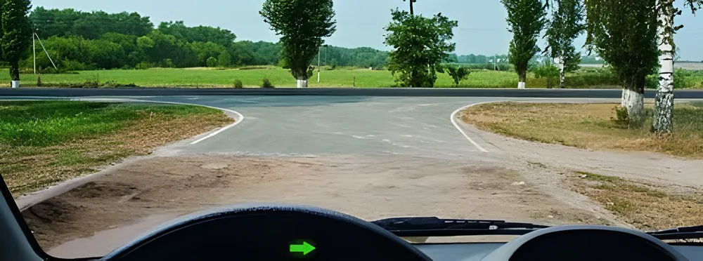
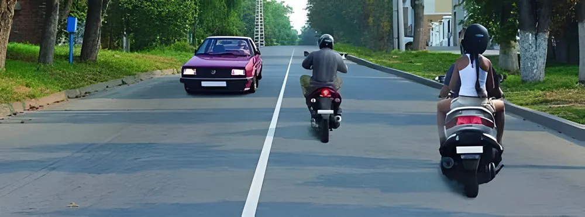
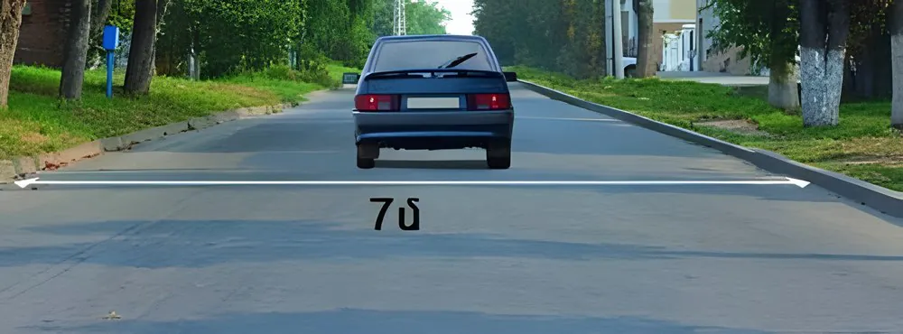
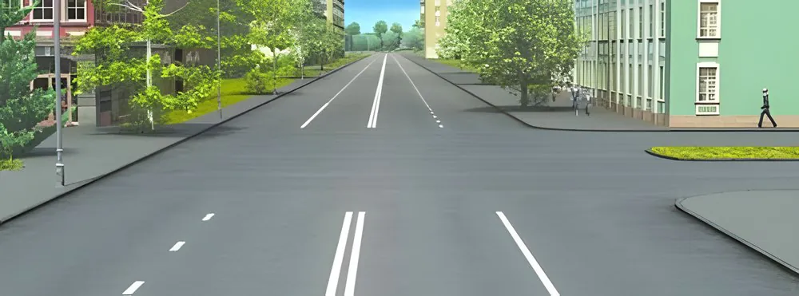
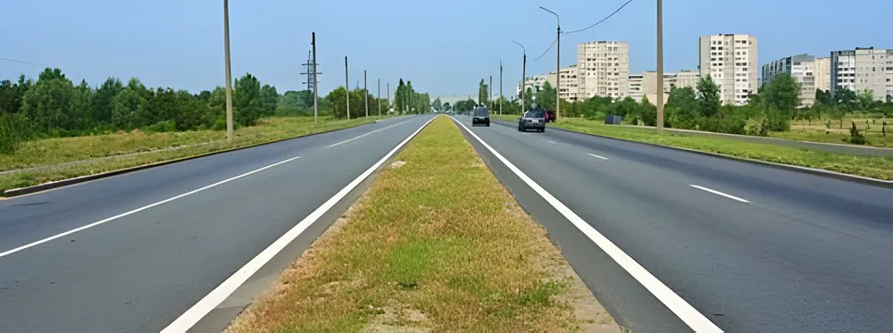
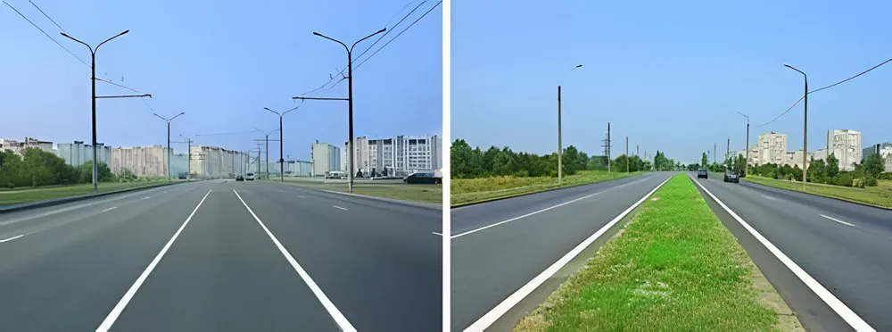
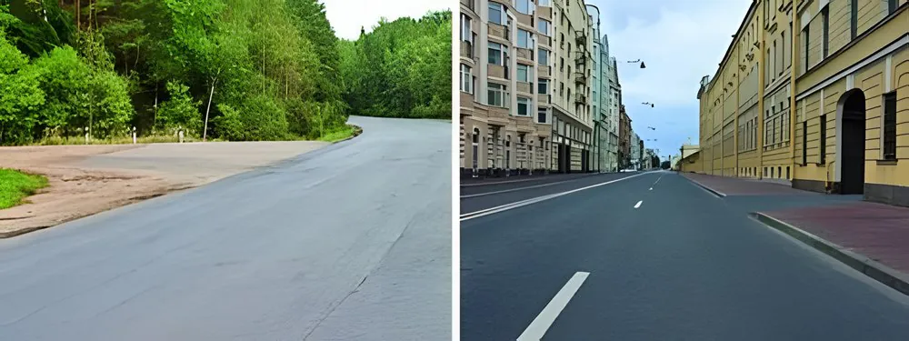
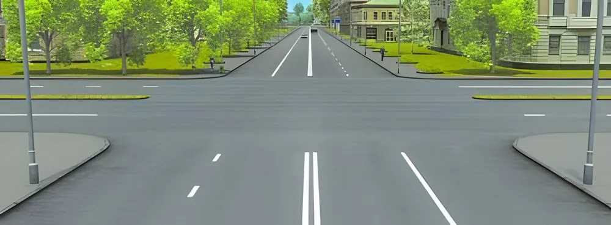

Extraction review - Group 2 (ru)
82 questions from group-2-ru.pdf - 10 with a picture - 0 with an uncertain picture mapping. The correct option is highlighted in green.
1.PDF page 1 - g2-q001
Согласно Закону Республики Армения «Об обеспечении безопасности дорожного движения», пассажиром считается:
(no picture)
- Лицо, находящееся в салоне (кабине) транспортного средства или на транспортном средстве, за исключением водителя и лица, обучающего вождению.
- Лицо, находящееся в салоне (кабине) транспортного средства или на транспортном средстве, а также лицо, садящееся в транспортное средство (поднимающееся на него) или выходящее из него (спускающееся с него), за исключением водителя и лица, обучающего вождению.
Answer: 2
2.PDF page 1 - g2-q002
Согласно Закону Республики Армения «Об обеспечении безопасности дорожного движения», водительское удостоверение на право управления транспортными средствами категории «A» может быть выдано:
(no picture)
- Лицам, достигшим 16-летнего возраста.
- Лицам, достигшим 17-летнего возраста.
- Лицам, достигшим 18-летнего возраста.
Answer: 3
3.PDF page 1 - g2-q003
Согласно Закону Республики Армения «Об обеспечении безопасности дорожного движения», водительское удостоверение на право управления транспортными средствами категории «BE» может быть выдано:
(no picture)
- Лицам, достигшим 17-летнего возраста.
- Лицам, достигшим 18-летнего возраста.
- Лицам, достигшим 19-летнего возраста.
Answer: 3
4.PDF page 1 - g2-q004
Согласно Закону Республики Армения «Об обеспечении безопасности дорожного движения», проезжей частью дороги считается:
(no picture)
- Элемент дороги, предназначенный для движения транспортных средств.
- Элемент дороги, предназначенный для движения нерельсовых транспортных средств.
Answer: 2
5.PDF page 1 - g2-q005
Обязан ли обучаемый вождению пользоваться ремнями безопасности во время учебной езды?
(no picture)
- Обязан.
- Не обязан.
- Не обязан, если это затрудняет управление автомобилем.
- Не обязан, если это разрешает лицо, обучающее вождению.
Answer: 1
6.PDF page 2 - g2-q006
Согласно Закону Республики Армения «Об обеспечении безопасности дорожного движения», пешеходом считается:
(no picture)
- Лицо, находящееся на дороге вне транспортного средства, за исключением лица, уполномоченного выполнять работы на дороге и осуществляющего такие работы в установленном законодательством порядке.
- Лицо, находящееся на дороге вне транспортного средства, в том числе лицо, уполномоченное выполнять работы на дороге и осуществляющее такие работы в установленном законодательством порядке.
Answer: 1
7.PDF page 2 - g2-q007
Согласно Закону Республики Армения «Об обеспечении безопасности дорожного движения», первоначальное обучение практическому вождению транспортного средства осуществляется:
(no picture)
- На дорогах вне населённых пунктов с учётом интенсивности движения транспортных средств.
- На закрытой площадке или автодроме.
- На любой дороге, за исключением автомагистралей, с учётом интенсивности движения транспортных средств.
Answer: 2
8.PDF page 2 - g2-q008
Согласно Закону Республики Армения «Об обеспечении безопасности дорожного движения», считается ли выезд с прилегающей территории на дорогу перекрёстком?
(no picture)
- Не считается.
- Считается.
Answer: 1
9.PDF page 2 - g2-q009
Согласно Закону Республики Армения «Об обеспечении безопасности дорожного движения», лицам, имеющим водительское удостоверение на право управления транспортными средствами категорий «B», «C» и «D», разрешается управлять ими также с прицепами, если разрешённая максимальная масса прицепа не превышает:
(no picture)
- 750 кг.
- 800 кг.
- 1000 кг.
Answer: 1
10.PDF page 2 - g2-q010
Согласно Закону Республики Армения «Об обеспечении безопасности дорожного движения», велосипедистам запрещается движение:
(no picture)
- Без защитных очков.
- Без шлема.
- В обоих случаях.
Answer: 2
11.PDF page 2 - g2-q011
Согласно Закону Республики Армения «Об обеспечении безопасности дорожного движения», водительское удостоверение на право управления транспортными средствами категорий «B» и «C» может быть выдано:
(no picture)
- Лицам, достигшим 16-летнего возраста.
- Лицам, достигшим 17-летнего возраста.
- Лицам, достигшим 18-летнего возраста.
Answer: 3
12.PDF page 3 - g2-q012
Согласно Закону Республики Армения «Об обеспечении безопасности дорожного движения», мопедом считается:
(no picture)
- Двух- или трёхколёсное транспортное средство с рабочим объёмом двигателя не более 50 куб. см и максимальной скоростью не более 50 км/ч.
- Двух- или трёхколёсное транспортное средство с рабочим объёмом двигателя не более 60 куб. см и максимальной скоростью не более 60 км/ч.
- Двух- или трёхколёсное транспортное средство с рабочим объёмом двигателя не более 70 куб. см и максимальной скоростью не более 70 км/ч.
Answer: 1
13.PDF page 3 - g2-q013
Согласно Закону Республики Армения «Об обеспечении безопасности дорожного движения», вынужденной остановкой считается:
(no picture)
- Прекращение движения в связи с неожиданным включением запрещающего сигнала светофора.
- Прекращение движения в связи с образовавшимся на дороге затором.
- Приведение транспортного средства в неподвижное состояние вследствие его неисправности, физического и (или) психического состояния водителя (пассажира), опасности, связанной с перевозимым грузом, либо иного препятствия, возникшего на дороге.
- Все перечисленные случаи.
Answer: 4
14.PDF page 3 - g2-q014
Согласно Закону Республики Армения «Об обеспечении безопасности дорожного движения», недостаточной видимостью считается:
(no picture)
- Расстояние видимости дороги в тёмное время суток.
- Расстояние видимости дороги в населённых пунктах при отсутствии искусственного освещения проезжей части.
- Видимость дороги и (или) расстояние видимости менее 300 метров в условиях тумана, дождя, снегопада и (или) иных неблагоприятных погодных условий для обеспечения безопасности дорожного движения.
Answer: 3
15.PDF page 3 - g2-q015
Согласно Закону Республики Армения «Об обеспечении безопасности дорожного движения», остановкой считается:
(no picture)
- Преднамеренное прекращение движения транспортного средства на срок до 5 минут либо на время, необходимое для посадки или высадки пассажиров и (или) загрузки или разгрузки транспортного средства.
- Прекращение движения транспортного средства на срок более 5 минут, если это не связано с посадкой или высадкой пассажиров либо загрузкой или разгрузкой транспортного средства.
Answer: 1
16.PDF page 3 - g2-q016
Согласно Закону Республики Армения «Об обеспечении безопасности дорожного движения», транспортным средством общего пользования считается:
(no picture)
- Транспортное средство, движущееся по маршруту, имеющее остановочные пункты и предназначенное для перевозки пассажиров и (или) багажа (трамвай, троллейбус, автобус).
- Транспортное средство, движущееся по маршруту, имеющее остановочные пункты и предназначенное для перевозки пассажиров и (или) багажа (трамвай, троллейбус, автобус), а также легковой автомобиль-такси.
Answer: 1
17.PDF page 4 - g2-q017
Согласно Закону Республики Армения «Об обеспечении безопасности дорожного движения», к пешеходам приравниваются:
(no picture)
- Лица с инвалидностью, передвигающиеся в немоторизованных инвалидных колясках.
- Лица, ведущие (толкающие) тележку, санки, детскую или инвалидную коляску.
- Все перечисленные лица.
Answer: 3
18.PDF page 4 - g2-q018
Согласно Закону Республики Армения «Об обеспечении безопасности дорожного движения», прицепом (полуприцепом) считается:
(no picture)
- Любое механическое транспортное средство, буксируемое на жёсткой сцепке.
- Транспортное средство, не оборудованное двигателем, предназначенное для приведения в движение механическим транспортным средством и движения в его составе как единое целое, включая специальный прицеп.
Answer: 2
19.PDF page 4 - g2-q019
Согласно Закону Республики Армения «Об обеспечении безопасности дорожного движения», на дорогах Республики Армения устанавливается:
(no picture)
- Правостороннее движение.
- Левостороннее движение.
Answer: 1
20.PDF page 4 - g2-q020
Согласно Закону Республики Армения «Об обеспечении безопасности дорожного движения», стоянкой считается:
(no picture)
- Преднамеренное прекращение движения транспортного средства на срок более 5 минут, если это не связано с посадкой или высадкой пассажиров либо загрузкой или разгрузкой транспортного средства.
- Преднамеренное прекращение движения транспортного средства на срок более 5 минут, за исключением случаев предотвращения столкновения с другим участником дорожного движения или препятствием, посадки или высадки пассажиров и (или) загрузки или разгрузки транспортного средства, а также иных случаев, предусмотренных законодательством.
Answer: 2
21.PDF page 4 - g2-q021
Согласно Закону Республики Армения «Об обеспечении безопасности дорожного движения», водительское удостоверение на право управления транспортными средствами категории «D» и подкатегории «D1» может быть выдано лицам, призванным в Вооружённые силы Республики Армения и другие войска:
(no picture)
- Достигшим 18-летнего возраста.
- Достигшим 19-летнего возраста.
- Достигшим 20-летнего возраста.
- Достигшим 21-летнего возраста.
Answer: 2
22.PDF page 5 - g2-q022
Согласно Закону Республики Армения «Об обеспечении безопасности дорожного движения», в течение какого срока со дня приобретения транспортное средство должно быть представлено на государственную регистрацию в регистрационно-экзаменационное подразделение Министерства внутренних дел?
(no picture)
- В течение 15 дней.
- В течение 10 дней.
- В течение 20 дней.
Answer: 1
23.PDF page 5 - g2-q023
Согласно Закону Республики Армения «Об обеспечении безопасности дорожного движения», ответственность за содержание участвующего в дорожном движении транспортного средства в технически исправном состоянии несёт:
(no picture)
- Собственник или пользователь транспортного средства.
- Организация, продавшая транспортное средство.
- Организация, проводившая последний ежегодный технический осмотр транспортного средства.
- Все перечисленные лица и организации.
Answer: 1
24.PDF page 5 - g2-q024
Согласно Закону Республики Армения «Об обеспечении безопасности дорожного движения», перед началом движения водитель транспортного средства обязан проверить:
(no picture)
- Исправность тормозной системы и рулевого управления.
- Соответствие остаточной высоты рисунка протектора шин установленным нормам.
- Всё перечисленное.
Answer: 3
25.PDF page 5 - g2-q025
Согласно Закону Республики Армения «Об обеспечении безопасности дорожного движения», водитель транспортного средства обязан предоставить транспортное средство для оказания содействия:
(no picture)
- Сотрудникам полиции — для доставки в медицинскую организацию лиц, нуждающихся в неотложной медицинской помощи.
- Медицинским работникам, следующим в попутном направлении для оказания медицинской помощи, — с согласия водителя.
- В обоих случаях.
Answer: 3
26.PDF page 5 - g2-q026
Согласно Закону Республики Армения «Об обеспечении безопасности дорожного движения», водитель транспортного средства, причастный к дорожно-транспортному происшествию, обязан:
(no picture)
- Немедленно остановить транспортное средство.
- Включить аварийную световую сигнализацию.
- Не перемещать предметы, имеющие отношение к происшествию.
- Выполнить все перечисленные действия.
Answer: 4
27.PDF page 6 - g2-q027
Согласно Закону Республики Армения «Об обеспечении безопасности дорожного движения», водитель механического транспортного средства обязан иметь при себе:
(no picture)
- Водительское удостоверение на право управления транспортным средством соответствующей категории и регистрационные документы на транспортное средство либо, на территории Республики Армения, их цифровые версии.
- Доверенность — при управлении транспортным средством, принадлежащим другому лицу.
- Все перечисленные документы.
Answer: 1
28.PDF page 6 - g2-q028
Согласно Закону Республики Армения «Об обеспечении безопасности дорожного движения», полосой движения считается:
(no picture)
- Обозначенная дорожной разметкой продольная полоса проезжей части, ширина которой достаточна для движения транспортных средств в один ряд.
- Обозначенная или не обозначенная дорожной разметкой продольная полоса проезжей части, ширина которой достаточна для движения транспортных средств в один ряд.
Answer: 2
29.PDF page 6 - g2-q029
Согласно Закону Республики Армения «Об обеспечении безопасности дорожного движения», разрешённой максимальной массой считается:
(no picture)
- Масса укомплектованного и заправленного транспортного средства.
- Масса полностью укомплектованного и заправленного транспортного средства с водителем, пассажирами и грузом, установленная организацией-изготовителем в качестве максимально допустимой.
Answer: 2
30.PDF page 6 - g2-q030
Согласно Закону Республики Армения «Об обеспечении безопасности дорожного движения», регулировщиком считается:
(no picture)
- Лицо, уполномоченное регулировать дорожное движение и осуществляющее такое регулирование в установленном законодательством порядке.
- Любой участник дорожного движения — водитель, пассажир или пешеход, — который при возникновении необходимости выполняет функции регулировщика.
- Все перечисленные лица.
Answer: 1
31.PDF page 6 - g2-q031
Согласно Закону Республики Армения «Об обеспечении безопасности дорожного движения», велосипедом считается:
(no picture)
- Транспортное средство, имеющее не менее двух колёс и приводимое в движение, как правило, мускульной силой находящегося на нём человека, в частности посредством педалей или рукояток, а также инвалидная коляска.
- Транспортное средство, имеющее не менее двух колёс и приводимое в движение, как правило, мускульной силой находящегося на нём лица, в частности посредством педалей или рукояток, за исключением инвалидной коляски; оно также может быть оборудовано электродвигателем номинальной максимальной мощностью в режиме длительной нагрузки не более 0,25 кВт, автоматически отключающимся при скорости свыше 25 км/ч.
Answer: 2
32.PDF page 7 - g2-q032
Согласно Закону Республики Армения «Об обеспечении безопасности дорожного движения», лицо, обучающее вождению транспортного средства:
(no picture)
- Приравнивается к водителю.
- Не приравнивается к водителю.
Answer: 1
33.PDF page 7 - g2-q033
Согласно Закону Республики Армения «Об обеспечении безопасности дорожного движения», аварийной ситуацией считается:
(no picture)
- Ситуация, возникшая вследствие действия и (или) бездействия участника дорожного движения, при которой создаётся реальная угроза дорожно-транспортного происшествия.
- Ситуация, возникшая вследствие действия и (или) бездействия участника дорожного движения и (или) регулировщика, при которой создаётся реальная угроза дорожно-транспортного происшествия.
Answer: 2
34.PDF page 7 - g2-q034
Согласно Закону Республики Армения «Об обеспечении безопасности дорожного движения», тёмным временем суток считается:
(no picture)
- В осенний и зимний периоды — время с 20:00 до 08:00, а в весенний и летний периоды — время с 22:00 до 06:00.
- Промежуток времени между окончанием вечерних сумерек и началом утренних сумерек.
- Период отсутствия солнечного освещения.
Answer: 2
35.PDF page 7 - g2-q035
Согласно Закону Республики Армения «Об обеспечении безопасности дорожного движения», легковым автомобилем считается:
(no picture)
- Автомобиль, имеющий не более восьми мест для сидения пассажиров и по своей конструкции и оборудованию предназначенный для безопасной и комфортной перевозки пассажиров и багажа.
- Автомобиль, имеющий не более четырёх мест для сидения пассажиров, за исключением детей до 12 лет, и по своей конструкции и оборудованию предназначенный для безопасной и комфортной перевозки пассажиров и багажа.
Answer: 1
36.PDF page 7 - g2-q036
Согласно Закону Республики Армения «Об обеспечении безопасности дорожного движения», к пешеходам приравниваются:
(no picture)
- Лица с инвалидностью, передвигающиеся со скоростью пешехода в инвалидной коляске, оборудованной двигателем.
- Лица, ведущие велосипед, мопед или мотоцикл.
- Все перечисленные лица.
Answer: 3
37.PDF page 7 - g2-q037
Согласно Закону Республики Армения «Об обеспечении безопасности дорожного движения», право на управление транспортными средствами возникает:
(no picture)
- С момента успешной сдачи практического экзамена по управлению транспортным средством в регистрационно-экзаменационном подразделении Министерства внутренних дел.
- С момента получения водительского удостоверения.
Answer: 2
38.PDF page 8 - g2-q038
Согласно Закону Республики Армения «Об обеспечении безопасности дорожного движения», международные водительские удостоверения на право управления транспортными средствами категорий «A» и «B» могут быть выданы:
(no picture)
- Лицам, достигшим 16-летнего возраста.
- Лицам, достигшим 17-летнего возраста.
- Лицам, достигшим 18-летнего возраста.
Answer: 3
39.PDF page 8 - g2-q039
Согласно Закону Республики Армения «Об обеспечении безопасности дорожного движения», международное водительское удостоверение на право управления транспортными средствами категории «C» может быть выдано:
(no picture)
- Лицам, достигшим 18-летнего возраста.
- Лицам, достигшим 20-летнего возраста.
- Лицам, достигшим 21-летнего возраста.
Answer: 3
40.PDF page 8 - g2-q040
Согласно Закону Республики Армения «Об обеспечении безопасности дорожного движения», национальное водительское удостоверение выдаётся:
(no picture)
- Сроком на 5 лет.
- Сроком на 10 лет.
- Сроком на 20 лет.
- Бессрочно.
Answer: 2
41.PDF page 8 - g2-q041
Согласно Закону Республики Армения «Об обеспечении безопасности дорожного движения», международное водительское удостоверение выдаётся:
(no picture)
- Сроком на 1 год.
- Сроком на 3 года.
- Сроком на 5 лет.
- Бессрочно.
Answer: 2
42.PDF page 8 - g2-q042
Согласно Закону Республики Армения «Об обеспечении безопасности дорожного движения», кандидатом в водители, за исключением кандидата в водители транспортных средств подкатегории «AM», может стать:
(no picture)
- Лицо, достигшее 15-летнего возраста.
- Лицо, достигшее 16-летнего возраста.
- Лицо, достигшее 17-летнего возраста.
Answer: 3
43.PDF page 9 - g2-q043
Согласно Закону Республики Армения «Об обеспечении безопасности дорожного движения», остановкой считается:
(no picture)
- Приведение транспортного средства в неподвижное состояние в связи с требованием пассажира.
- Преднамеренное прекращение движения транспортного средства на срок более 5 минут, если это не связано с посадкой или высадкой пассажиров либо загрузкой или разгрузкой транспортного средства.
- Преднамеренное прекращение движения транспортного средства на срок до 5 минут либо на время, необходимое для посадки или высадки пассажиров и (или) загрузки или разгрузки транспортного средства.
Answer: 3
44.PDF page 9 - g2-q044
Согласно Закону Республики Армения «Об обеспечении безопасности дорожного движения», разрешённой максимальной массой транспортного средства считается:
(no picture)
- Максимальная масса укомплектованного и заправленного транспортного средства.
- Масса укомплектованного и заправленного транспортного средства с водителем, пассажирами и грузом, установленная организацией-изготовителем в качестве максимально допустимой.
- Масса транспортного средства с водителем, пассажирами и грузом, установленная организацией-изготовителем в качестве максимально допустимой.
Answer: 2
45.PDF page 9 - g2-q045
Согласно Закону Республики Армения «Об обеспечении безопасности дорожного движения», лицам, имеющим право управления транспортными средствами категорий «B», «C», «D» и подкатегорий «C1», «D1», разрешается управлять ими также с прицепами, если разрешённая максимальная масса прицепа составляет:
(no picture)
- 950 кг.
- 850 кг.
- 750 кг.
Answer: 3
46.PDF page 9 - g2-q046
Выезжая с дороги с грунтовым покрытием на дорогу с асфальтобетонным покрытием, последнюю:

- Следует считать главной дорогой.
- Следует считать равнозначной нашей дороге.
Answer: 1
47.PDF page 10 - g2-q047
Сколько полос движения имеется на данной проезжей части?

- Одна.
- Две.
- Три.
Answer: 2
48.PDF page 10 - g2-q048
Разрешается ли при данной ширине проезжей части двигаться по её центру?

- Да.
- Да, при отсутствии встречного движения.
- Нет.
Answer: 3
49.PDF page 10 - g2-q049
Какой из указанных неподвижных объектов не является препятствием?
(no picture)
- Повреждение покрытия проезжей части.
- Посторонний предмет.
- Неисправное или неподвижное транспортное средство.
- Транспортное средство, остановившееся из-за затора.
Answer: 4
50.PDF page 10 - g2-q050
Являются ли тротуар или обочина частью дороги?
(no picture)
- Да.
- Только обочина.
- Нет.
Answer: 1
51.PDF page 11 - g2-q051
Сколько проезжих частей имеет данная дорога?
- Одну.
- Две.
- Четыре.
Answer: 2
52.PDF page 11 - g2-q052
Сколько перекрёстков изображено на данном рисунке?
- Один.
- Два.
- Четыре.
Answer: 1
53.PDF page 11 - g2-q053
Сколько пересечений проезжих частей имеется на данном перекрёстке?

- Одно.
- Два.
Answer: 2
54.PDF page 12 - g2-q054
Сколько полос движения имеет данная дорога?

- Две.
- Четыре.
Answer: 2
55.PDF page 12 - g2-q055
На каком рисунке дорога имеет разделительную полосу?

- Только на правом.
- На обоих рисунках.
- Только на левом.
Answer: 2
56.PDF page 12 - g2-q056
Уступить дорогу другим транспортным средствам означает, что:
(no picture)
- Водитель не должен продолжать или возобновлять движение либо выполнять какой-либо манёвр, если это может вынудить водителей других транспортных средств изменить направление движения или скорость.
- Водитель не должен продолжать или возобновлять движение либо выполнять какой-либо манёвр, если это может вынудить водителей других транспортных средств неожиданно изменить направление движения или скорость.
- Водитель обязан безусловно остановить транспортное средство.
Answer: 2
57.PDF page 13 - g2-q057
На каком рисунке изображён перекрёсток?

- Только на левом.
- Только на правом.
- На обоих рисунках.
Answer: 1
58.PDF page 13 - g2-q058
Сколько пересечений проезжих частей имеется на перекрёстке?

- Одно.
- Два.
- Четыре.
Answer: 2
59.PDF page 13 - g2-q059
Перестроением считается:
(no picture)
- Выезд транспортного средства из занимаемой полосы движения с сохранением первоначального направления движения.
- Выезд транспортного средства из занимаемого ряда в пределах обозначенной полосы движения с сохранением первоначального направления движения.
- Оба указанных случая.
Answer: 3
60.PDF page 13 - g2-q060
Поворотом считается:
(no picture)
- Манёвр, выполняемый с целью выезда транспортного средства на другую дорогу.
- Манёвр, выполняемый с целью выезда транспортного средства на другую дорогу или с дороги на прилегающую территорию.
Answer: 2
61.PDF page 14 - g2-q061
Разворотом считается:
(no picture)
- Движение транспортного средства во встречном направлении.
- Манёвр, выполняемый с целью изменения направления движения транспортного средства на противоположное.
Answer: 2
62.PDF page 14 - g2-q062
Опережением считается:
(no picture)
- Движение с большей скоростью, чем скорость одного или нескольких движущихся транспортных средств, без выезда из занимаемой полосы.
- Движение с большей скоростью, чем скорость одного или нескольких движущихся транспортных средств, связанное с выездом из занимаемой полосы.
Answer: 1
63.PDF page 14 - g2-q063
Началом движения считается:
(no picture)
- Момент начала движения транспортного средства с места остановки или стоянки, связанный либо не связанный с перестроением на соседнюю полосу движения.
- Момент начала движения транспортного средства с места остановки или стоянки, связанный с перестроением на соседнюю полосу движения.
Answer: 1
64.PDF page 14 - g2-q064
Маневрированием считается:
(no picture)
- Начало движения транспортного средства, связанное с выездом на соседнюю полосу движения, перестроение, изменение направления движения, остановка с перестроением и движение задним ходом.
- Начало движения транспортного средства, перестроение, изменение направления движения, остановка и движение задним ходом.
Answer: 1
65.PDF page 14 - g2-q065
Согласно Закону Республики Армения «Об обеспечении безопасности дорожного движения», грузовой автомобиль — это:
(no picture)
- Автомобиль, по своей конструкции и оборудованию предназначенный для перевозки грузов.
- Автомобиль массой более 3,5 тонны, по своей конструкции и оборудованию предназначенный для перевозки грузов.
Answer: 1
66.PDF page 14 - g2-q066
Согласно Закону Республики Армения «Об обеспечении безопасности дорожного движения», разделительной полосой считается:
(no picture)
- Конструктивно выделенный элемент дороги, разделяющий смежные проезжие части и не предназначенный для движения или остановки транспортных средств и пешеходов.
- Конструктивно и (или) соответствующей разметкой выделенный элемент дороги, разделяющий смежные проезжие части и не предназначенный для движения или остановки транспортных средств и пешеходов.
Answer: 2
67.PDF page 15 - g2-q067
Согласно Закону Республики Армения «Об обеспечении безопасности дорожного движения», транспортным средством считается:
(no picture)
- Автомобиль и мотоцикл.
- Устройство, предназначенное для перевозки по дороге людей, грузов или установленного на нём оборудования.
Answer: 2
68.PDF page 15 - g2-q068
Согласно Закону Республики Армения «Об обеспечении безопасности дорожного движения», к водителю приравнивается:
(no picture)
- Лицо, ведущее по дороге вьючных и (или) верховых животных либо перегоняющее скот.
- Лицо, ведущее вьючных и (или) верховых животных либо перегоняющее скот.
Answer: 1
69.PDF page 15 - g2-q069
Согласно Закону Республики Армения «Об обеспечении безопасности дорожного движения», к мотоциклам приравниваются:
(no picture)
- Трёхколёсные механические транспортные средства, масса которых в снаряжённом и заправленном состоянии без водителя, груза и пассажиров не превышает 400 кг.
- Мотовездеходы (квадроциклы).
- Квадрициклы с мотоциклетной посадкой или рулём мотоциклетного типа.
Answer: 3
70.PDF page 15 - g2-q070
Согласно Закону Республики Армения «Об обеспечении безопасности дорожного движения», тротуаром считается:
(no picture)
- Элемент дороги, примыкающий к проезжей части и предназначенный в установленном законодательством порядке для движения пешеходов.
- Элемент дороги, отделённый от проезжей части любым способом и предназначенный в установленном законодательством порядке для движения пешеходов.
- Оба указанных случая.
Answer: 3
71.PDF page 15 - g2-q071
Согласно Закону Республики Армения «Об обеспечении безопасности дорожного движения», автомобилем считается:
(no picture)
- Механическое транспортное средство, предназначенное для перевозки по дороге людей или грузов либо для буксировки транспортных средств, используемых для перевозки грузов, за исключением таких транспортных средств, как сельскохозяйственные тракторы, для которых использование в указанных целях является дополнительной функцией.
- Механическое транспортное средство, предназначенное для перевозки по дороге людей или грузов либо для буксировки транспортных средств, используемых для перевозки грузов, включая такие транспортные средства, как сельскохозяйственные тракторы, для которых использование в указанных целях является дополнительной функцией.
Answer: 1
72.PDF page 16 - g2-q072
Согласно Закону Республики Армения «Об обеспечении безопасности дорожного движения», национальное водительское удостоверение Республики Армения, предоставляющее право управления транспортными средствами категории «A», также даёт право управлять:
(no picture)
- Транспортными средствами подкатегории «A1».
- Транспортными средствами подкатегории «AM».
- Транспортными средствами подкатегории «B1» с мотоциклетной посадкой или рулём.
- Всеми перечисленными транспортными средствами.
Answer: 4
73.PDF page 16 - g2-q073
Согласно Закону Республики Армения «Об обеспечении безопасности дорожного движения», национальное водительское удостоверение Республики Армения, предоставляющее право управления транспортными средствами категории «B», также даёт право управлять:
(no picture)
- Транспортными средствами подкатегории «B1», за исключением транспортных средств с мотоциклетной посадкой или рулём.
- Транспортными средствами подкатегории «AM».
Answer: 1
74.PDF page 16 - g2-q074
Согласно Закону Республики Армения «Об обеспечении безопасности дорожного движения», международные водительские удостоверения, выданные компетентными органами Республики Армения, для управления транспортными средствами на территории Республики Армения считаются:
(no picture)
- Действительными.
- Недействительными.
Answer: 2
75.PDF page 16 - g2-q075
Согласно Закону Республики Армения «Об обеспечении безопасности дорожного движения», право управления транспортными средствами возникает:
(no picture)
- С момента получения водительского удостоверения.
- С момента предоставления цифровой версии водительского удостоверения.
- В обоих случаях.
Answer: 3
76.PDF page 16 - g2-q076
Согласно Закону Республики Армения «Об обеспечении безопасности дорожного движения», водительские удостоверения граждан Республики Армения, включая лиц с двойным гражданством, полученные в других государствах и соответствующие требованиям Венской конвенции 1968 года «О дорожном движении» с последующими изменениями и дополнениями, считаются действительными на территории Республики Армения с момента въезда этих лиц в Республику Армения:
(no picture)
- В течение одного года.
- В течение шести месяцев.
- В течение трёх месяцев.
Answer: 3
77.PDF page 17 - g2-q077
Согласно Закону Республики Армения «Об обеспечении безопасности дорожного движения», лица, впервые обращающиеся за получением водительского удостоверения на право управления транспортными средствами каких из перечисленных категорий, должны представить в регистрационно-экзаменационное подразделение Министерства внутренних дел справку о прохождении медицинского освидетельствования?
(no picture)
- Категорий «B», «C», «D».
- Категорий «C», «D», «T».
- Категорий «B», «D», «T».
- Категорий «B», «C», «D1».
Answer: 2
78.PDF page 17 - g2-q078
Согласно Закону Республики Армения «Об обеспечении безопасности дорожного движения», при нарушении Правил дорожного движения кандидатом в водители, проходящим обучение практическому вождению, ответственность в установленном законом порядке несёт:
(no picture)
- Кандидат в водители.
- Водитель-инструктор учебного центра либо лицо, обучающее практическому вождению в индивидуальном порядке.
- Оба.
Answer: 2
79.PDF page 17 - g2-q079
Согласно Закону Республики Армения «Об обеспечении безопасности дорожного движения», когда 18-летнее лицо, имеющее национальное водительское удостоверение категорий «BC», может получить международное водительское удостоверение тех же категорий?
(no picture)
- Одновременно с получением национального водительского удостоверения.
- После достижения 19-летнего возраста.
- После достижения 20-летнего возраста.
- После достижения 21-летнего возраста.
Answer: 4
80.PDF page 17 - g2-q080
Согласно Закону Республики Армения «Об обеспечении безопасности дорожного движения», когда 19-летнее лицо, имеющее национальное водительское удостоверение категорий «BE», «CE», может получить международное водительское удостоверение тех же категорий?
(no picture)
- Одновременно с получением национального водительского удостоверения.
- После достижения 20-летнего возраста.
- После достижения 21-летнего возраста.
- После достижения 22-летнего возраста.
Answer: 3
81.PDF page 17 - g2-q081
Согласно Закону Республики Армения «Об обеспечении безопасности дорожного движения», разрешается ли лицу, имеющему водительское удостоверение подкатегории «C1», управлять грузовым автомобилем, разрешённая максимальная масса которого превышает 8500 кг?
(no picture)
- Разрешается.
- Не разрешается.
Answer: 2
82.PDF page 18 - g2-q082
Согласно Закону Республики Армения «Об обеспечении безопасности дорожного движения», на дорогах общего пользования разрешается эксплуатировать:
(no picture)
- Квадрицикл.
- Квадроцикл.
- Оба транспортных средства.
Answer: 1